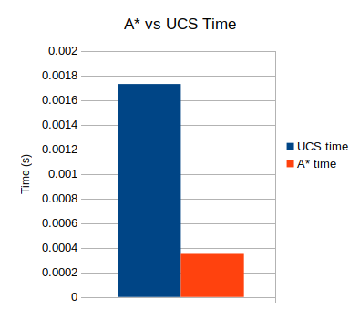
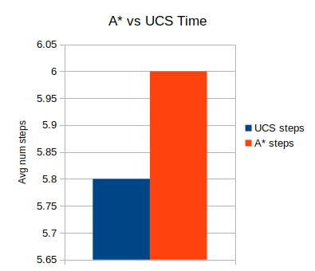

The largest challenges in this project included creating the A* search
algorithm, and tuning the parameters to make Boids look good. An additional
challenge was figuring out if navigation should be done on a flock level, or
on an individual agent level. Since each agent plans for itself, it's
possible that the planning graphs for agents in the flock will differ,
resulting in a badly behaving simulation where the agents move through
obstacles.
Controls
WASD/Mouse: Camera control
g: Start/stop flock motion
h: Hide/show planning graphs for agents
r: Reset the simulation (need to press
g again)
1-4: Select which flock force to adjust
z/x: Decrease/increase selected flock force
Implementation Details
Overview
Setup
When the program is first run, the following steps occur:
Generate scene meshes (ground plane and obstacles)
Create map with obstacles
Initialize PRM from map
Initialize flock and send planning graph to all agents
Path-plan using A* or UCS
At each timestep
At each timestep while the program is running, the following steps occur:
Update agent forces (goal-seeking and collision-avoidance)
Update agent accelerations, velocities, and positions
Determine all agents' next incremental goal
Calculate new flock centroid based on agents' positions
Graphs are represented as a list of nodes, each with a location, a list of
nodes that they are connected to, and the associated costs for each node.
The graph handles all adding and removing of nodes, and connecting the nodes
within the graph in a manner that does not intersect any obstacles
Probabilistic Road Map (PRM)
The PRM generates random locations within the dimensions of the map it is
given, and populates a new graph with nodes at those locations. Every time
the map is reset (when the user presses r), a new PRM is
generated.
A* Search
A* search takes the graph generated by the PRM and returns a path from the
start to the goal of a particular agent. The heuristic used by the
algorithm is the straight-line distance from the current node to the goal
node. This is an admissable heuristic because straight-line distance is
always the shortest possible path between any two points.
Compared with Uniform Cost Search (UCS), A* is much faster (see Figure 1).
However, A* seemed to perform slightly worse from a path-length perspective,
as shown in Figure 2. Data were obtained using a ten trials of a PRM graph
with 125 nodes.
Boids
The Boids algorithm for multi-agent interactions is used in this project. In
this particular implementation, there are five forces acting on each Boid
agent:
Cohesive: Seek the centroid of the flock. The vector
betwee the flock centroid and the Boid's current location is calculated, and
that directly becomes the cohesive force.
Separation: Go away from closest neighbors. Sometimes this
force resulted in the flock being squashed into a line, so an additional
component was added that constrains the flock's stretch in any particular
direction.
Alignment: Try to stay aligned with closest neighbors
using velocity. Currently just uses the average velocity of the entire
flock, and it seems to work fine.
Goal: Try to go towards next incremental goal
(furthest visible node). At each timestep, each Boid tries to find the
node along its planned path that is farthest from its current position, and
closest to the goal.
Obstacle-avoiding: Try to avoid every obstacle. The
distance from the center of every obstacle to the Boid's current position is
calculated, which directly becomes the force acting on the Boid.

Figure 1: Average time for A* and UCS

Figure 2: Average path length for A* and UCS
Code
Code from this project can be found in this GitHub repo.
The code is written in C++ and makes use of the following external libraries: